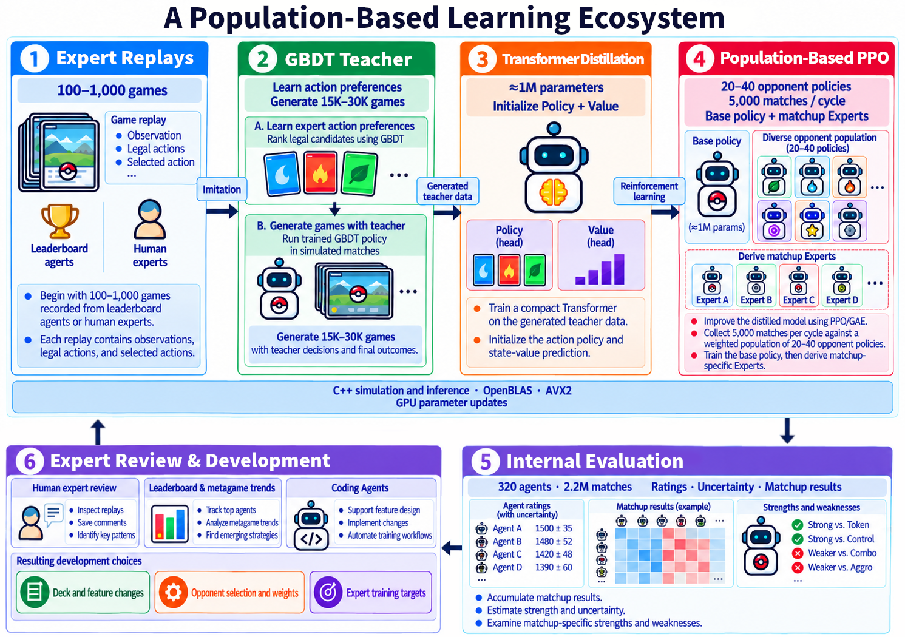
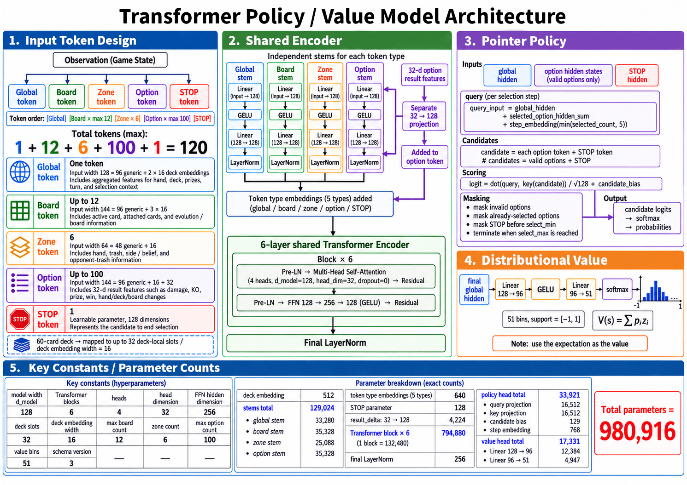
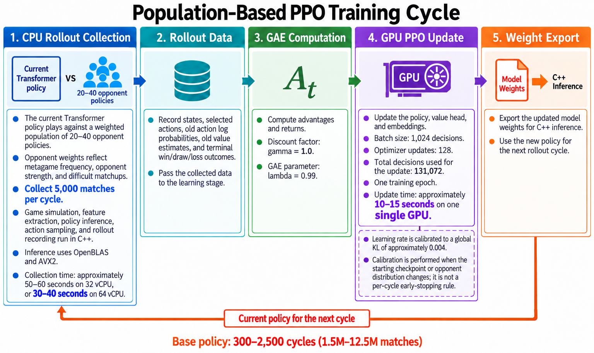
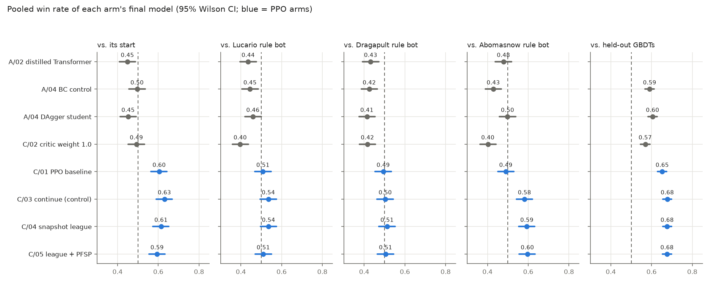
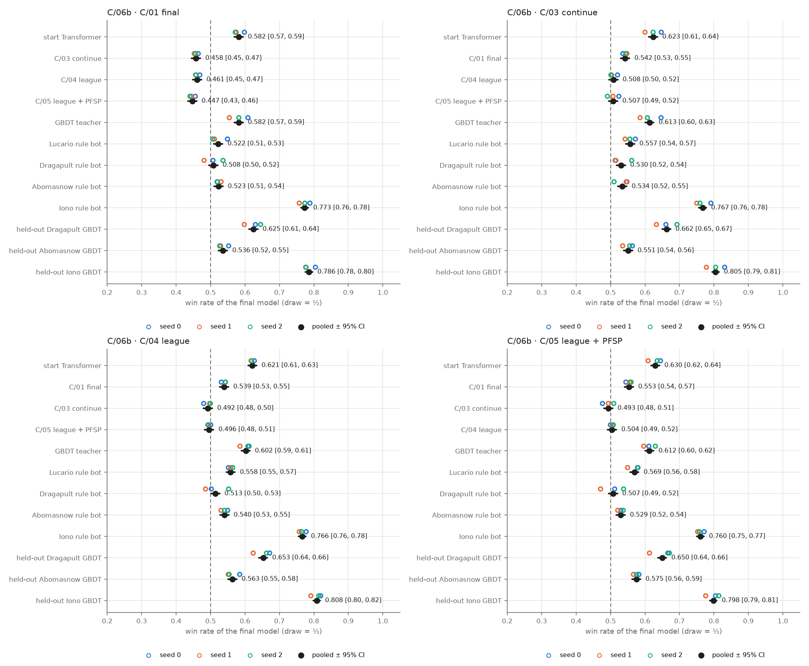
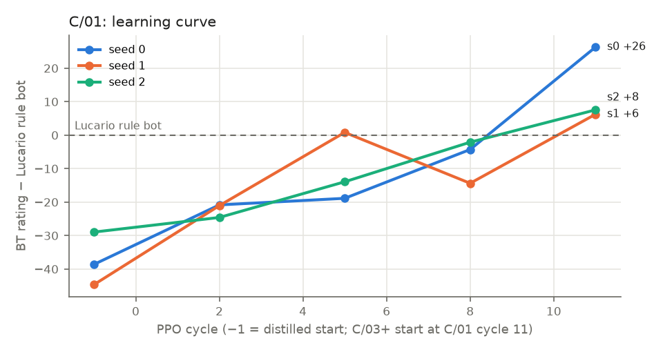
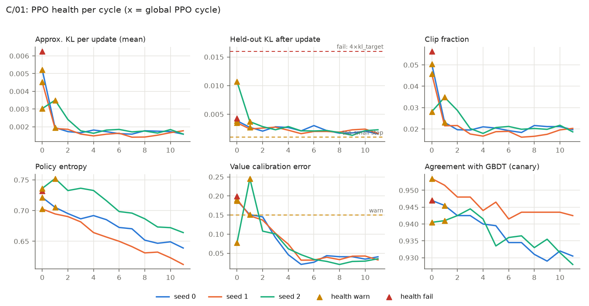

The whole solution, cover to cover
This guide walks through the 24th-place solution we forked, using its own three figures, and after every part says what we did with it, what we measured, and what is still missing. Read it once top to bottom. Then use section 9 to test yourself.
0 · How to read this
The solution is one idea repeated: get a decent policy cheaply, then let reinforcement learning improve it against many opponents. Every stage exists to make the next one possible:
- A strong player's games give labels ("in this state, this option was chosen").
- A GBDT learns those preferences fast and plays thousands of new games, producing many more labels.
- A small Transformer copies the GBDT. It's slightly weaker, but it is differentiable and has a value head, which PPO needs.
- PPO improves the Transformer by playing a population of opponents, millions of games.
- A rating system measures every agent; humans and coding agents decide what to change next.
Underneath, a fast C++ engine and inference makes the millions of games affordable, and parity checks prove the C++ and Python versions are the same agent.
Blue boxes describe the 24th-place design. Ours orange boxes describe our fork. File paths are relative to the repo; L/ means src/agents/mega_lucario/. Deeper theory for each part is in notes/lectures/ (section 10).
1 · The problem
Pokémon TCG as a decision problem. Two players with 60-card decks take turns. Each turn the engine asks the acting player a question (a "selection"): choose your active Pokémon, choose cards to discard, choose an attack, choose a target… Every question comes with a list of legal options and a minCount/maxCount: how many options must and may be picked. Picking several options one after another, then STOP, is how a multi-select is answered.
- Partially observable: you see your hand and the board, not the opponent's hand or either deck's order.
- Long: a game has roughly 60–70 of your decisions (393,199 decisions in 5,000 games in one of our PPO cycles, both seats counted where the learner plays itself).
- Sparse reward: only the result at the end: win +1, loss −1, draw 0.
- Opponent-dependent: the best play depends on the opponent's deck and style, and on Kaggle the opponents are other teams' agents with four official decks.
Our setting. The Kaggle playground version of the competition, its own engine and R2 card pool, our deck Mega Lucario ex. Baseline: the hosts' rule bot, which scored 538.9 on the leaderboard.
Research question. Under a fixed compute budget, which stages of this imitation → RL pipeline actually improve strength over the rule-based baseline, and why?
2 · Figure 1: a population-based learning ecosystem

docs/../assets/Fig1.png). Click to open full size. Stages ①–④ form the training pipeline along the top; ⑤ and ⑥ close the loop at the bottom. The band in the middle is the shared C++ simulation layer.How to read it. The top row is a pipeline from left to right: each box produces the input of the next one. The arrow labels say how knowledge flows: imitation (①→②), generated teacher data (②→③), reinforcement learning (③→④). The bottom row is the feedback loop: ⑤ measures everything, ⑥ is people (and coding agents) deciding what to change, and the arrow from ⑥ back up to ① means the whole thing is iterated. The blue band — C++ simulation and inference · OpenBLAS · AVX2 · GPU parameter updates — runs under every stage.
Expert replays: 100–1,000 games
What. Start from recorded games of strong players: leaderboard agents or human experts. Each replay is a sequence of (observation, legal actions, selected action) triples, plus the final result.
Why. Reinforcement learning from a random policy in a long, sparse-reward game learns almost nothing: a random agent rarely wins, and the "you lost" signal arrives 60 decisions after the moves that caused it. Imitation gives a competent starting point. The figure stresses 100–1,000 games: that's a tiny amount, which is why stage ② exists.
The subtle part. Every action must be paired with the observation before it was chosen, and only with information the acting player could see. Using the spectator's full state (the opponent's hand) would teach the model to cheat, and it would collapse when that information is missing at play time.
We had no leaderboard or human replays, so our expert is the hosts' rule bot (L/main.py, ported to C++ in L/cpp/policy.h). We collected 1,600 games (job 1943566): 8 balanced groups, the rule bot vs. each of the 4 official decks' rule bots × both seats.
Consequence: our teacher is a "competent beginner" with a fixed priority list. Its strength is the ceiling of everything imitation can reach. That one fact explains a lot of our results (section 6).
GBDT teacher: learn preferences, generate 15k–30k games
A. Learn expert action preferences. At every decision the legal options are ranked, not classified. Each option gets a feature vector (≈4.9k hand-built features: the card, its effect, the board, hand, prizes, energy…). A gradient-boosted tree model (LightGBM, LambdaRank objective) learns to score the expert's chosen option above the others in the same decision. Ranking fits the problem: the number and identity of options changes from question to question, and only their relative order matters.
Why a GBDT first? It learns well from little data (hundreds of games), trains in minutes on CPUs, and handles heterogeneous hand-made features without tuning. It turns 1,000 expert games into a policy that can play new games.
B. Generate games with the teacher. The trained GBDT then plays 15k–30k simulated games. Every decision it makes becomes a label: the GBDT's full score vector over the options, plus the game's final outcome. This is data amplification: the Transformer in ③ needs far more labels than the original replays hold, and the GBDT can generate them for free, in exactly the state distribution it will itself visit.
Parity. The GBDT is trained in Python but plays inside the C++ arena. Its C++ feature extraction and tree evaluation are audited against LightGBM to 1e-10 on games the GBDT played. Without that, the "teacher" generating data would not be the model that was trained (train/serve skew).
We measured how the GBDT scales with teacher data: 120 / 400 / 1,600 games × 3 seeds, one rating tournament of 15,600 games.
| Teacher games | Test top-1 (main bank) | BT rating | Win rate vs. the rule bot it imitates | Train RAM |
|---|---|---|---|---|
| 120 | 0.878 | 974.5 | 0.41–0.42 | 11 GB |
| 400 | 0.903 | 1004.9 | 0.39–0.47 | 37 GB |
| 1,600 | 0.923 | 1017.5 | 0.43–0.48 | 148 GB |
| Rule bot (teacher) | 1052.6 |
Lesson: more data helps with diminishing returns, but the student never reaches its teacher even at 92% per-decision agreement. The remaining 8% of decisions lose whole games. Memory grows ~0.09 GB per game, which is why 1,600 is our practical limit. Then we generated 5,000 GBDT games for distillation, not 15–30k.

Transformer distillation: ≈1M parameters, policy + value
What. A compact Transformer (980,916 parameters, Figure 2) is trained on the GBDT's generated games. Two targets per decision:
- Policy head learns the teacher's preferences: a KL loss toward the softmax (with a temperature) of the GBDT's scores over the legal options, plus a cross-entropy on the option actually chosen. Soft targets carry more information than the argmax alone: they say how close the second-best option was.
- Value head learns to predict the game's outcome from the state: a 51-bin distribution over [−1, 1], trained on the final result.
Why not just use the GBDT? PPO in ④ needs (a) a policy whose log-probabilities can be differentiated with respect to its parameters and (b) a value estimate V(s) for advantages. A tree ensemble gives neither. The Transformer is the "RL-ready" copy of the teacher. Distillation also initializes the value head, so PPO doesn't start with a random critic.
The cost. Copying is lossy. Small errors compound over a game, so the distilled model is usually a bit weaker than its teacher. That's accepted, because PPO is expected to more than recover it.
5,000 GBDT games, 5 epochs on one RTX 6000, 3 seeds. The Transformer agrees with the GBDT on 95.5% of decisions (KL 0.024), and its C++ export matches PyTorch within 4.4e-6. Yet head-to-head it wins only 0.448 [0.41, 0.49] against the GBDT: each imitation step costs about 20 rating points.
The critic is the weak spot: explained variance 0.31, validation value loss rising after epoch 3. Experiment C/02 tried weighting the value loss 4× higher; it didn't help (rejected).
Population-based PPO: 20–40 opponents, 5,000 matches per cycle
What. The distilled Transformer is the base policy. It plays 5,000 matches per cycle against a weighted population of 20–40 opponent policies, and PPO updates it on those games. Then matchup experts are derived: copies of the base policy fine-tuned against one opponent type each (Expert A, B, C, D…).
Why a population? Whom you practise against decides what you become good at:
- Against one fixed bot you learn to exploit that bot, and nothing else.
- Against only your current self you can chase your own tail (rock beats scissors beats paper beats rock) and forget how to beat strategies you no longer see.
- Against a mixture of many opponents (past versions, other decks, other styles), a strategy has to be robust to all of them. This is the idea behind fictitious self-play and AlphaStar's league. Weights let you emphasize the metagame (opponents you'll actually meet) and opponents you lose to.
Why experts? One network for every matchup has to compromise. A specialist fine-tuned for, say, the Dragapult matchup can play it better. At play time the agent switches to the expert for the detected opponent deck.
Our pool started with 6 opponents: the 4 rule bots, the GBDT and self, equal weights. In Sprint 3 we built the population part ourselves: a snapshot league (past checkpoints as frozen opponents: 3 recent + 2 older) and PFSP weights (more games against opponents we lose to). We have no matchup experts yet, and our pool never exceeds ~11 opponents.
PPO is clearly the stage that adds strength: C/01 beats its start 0.604 [0.56, 0.64] and also beats held-out opponents it never trained against. But it only ties the rule bots. Details in section 6.
Internal evaluation: 320 agents, 2.2M matches
What. Every agent ever trained is kept and rated against the others: ratings with uncertainty (Bayesian Bradley–Terry, an Elo-like scale), a matchup matrix (who beats whom), and per-agent strengths and weaknesses ("strong vs. Token decks, weak vs. Aggro").
Why. The Kaggle leaderboard is slow and noisy, and you can't submit thousands of agents. An internal league gives fast, cheap, statistically sound answers to "did this change help?" The matchup matrix is what tells you where to improve and which opponents to weight up in ④.
Reading a rating. A gap of Δ rating points predicts win rate 1 / (1 + 10−Δ/400): +26 ≈ 54%, +100 ≈ 64%, +200 ≈ 76%. Ratings are relative to the tournament's average (1000).
Protocol rating_v1 (docs/evaluation.md): each experiment gets one tournament per seed with ~12 agents, 200 games per pair, both seats, evaluation seeds disjoint from training seeds. We report head-to-head win rates with Wilson 95% intervals (the primary evidence) and BT ratings (a summary). We added a held-out pool: GBDTs for the other three decks that no arm ever trains against, so "better" can't be just exploiting the training opponents. Promotion rule, written before results: pooled lower bound vs. the champion > 0.5 and no loss on the held-out pool.
Expert review and development
What. Humans inspect replays and comment on key patterns; they track the leaderboard's top agents and metagame trends; coding agents help design features, implement changes and automate training. The outputs are three kinds of decision: deck and feature changes, opponent selection and weights, and expert training targets. Then the loop restarts at ①.
Why it matters. The automated pipeline optimizes what it's told to. Choosing what to tell it — which opponents matter, which features the model lacks, which matchups deserve an expert — is where most of the remaining gains in such competitions come from.
This is the part of the loop we are only starting: failure analysis of the replays (why we only tie the Dragapult rule bot), history features (B/01: the model currently has no memory of what the opponent played), and Kaggle submissions to learn the real metagame. The experiment READMEs and these notes play the role of the "expert review".
C++ simulation and inference · OpenBLAS · AVX2 · GPU parameter updates. Games, feature extraction, GBDT and Transformer inference and action sampling all run in one C++ process with many threads (OpenBLAS matrix products, AVX2 vector instructions). Python is used only for training: LightGBM on CPU, PyTorch on GPU. Moving data between them is what the parity checks guard (lecture 03 Q&A, lecture 11).
3 · Figure 2: the Transformer policy/value model

docs/../assets/Fig2.png). Panels: ① tokens, ② encoder, ③ pointer policy, ④ value head, ⑤ constants and exact parameter counts. Code: L/transformer/features.py (tokens), L/transformer/model.py (network), L/transformer/cpp/ (C++ copy).① Input token design: the game state as a set of tokens
The observation is turned into a set of tokens, each a row of 198 numbers, in a fixed order: [Global] [Board × ≤12] [Zone × 6] [Option × ≤100] [STOP]. At most 1 + 12 + 6 + 100 + 1 = 120 tokens; at least 20 (the code checks 20–120).
| Token | Count | What it describes | Input width |
|---|---|---|---|
| Global | 1 | Aggregates for the whole state: hand, deck and prize counts, turn, and the current question's context (what is being asked, min/max count, how many already selected) | 96 generic + 2 × 16 deck embeddings |
| Board | ≤ 12 | One per Pokémon in play (both players, active and bench): its card, attached cards, damage, evolution | 96 + 3 × 16 |
| Zone | 6 | Hand, trash, side/prizes for both players, including belief about the opponent's cards and the opponent's trash | 48 + 16 |
| Option | ≤ 100 | One per legal option of the current question. Includes 32 "result features": what picking it would do (damage, knock-out, prize taken, win, hand/deck/board changes) | 96 + 16 + 32 |
| STOP | 1 | A learned 128-d vector meaning "end the selection now" | — |
Card identity: the deck embedding. The 60-card deck is mapped to at most 32 deck-local slots (one per distinct card), each with a learned 16-d embedding. A token refers to cards by slot, so the network learns "what this card does in this deck". This is why each deck has its own model, and why the card IDs and counts are bound into the checkpoint and checked at load time (a mismatch fails loudly).
Why tokens instead of one flat vector? The number of Pokémon in play and the number of options change every decision. A set of tokens handles variable size naturally, attention lets every token look at every other one (an option token can "see" the board it would affect), and options become things the network can point at (③).
Why option "result features"? They give the model a one-step lookahead computed by the engine: "this attack would knock out their active and take a prize". That is cheap, exact information the network would otherwise have to learn from millions of games.
② Shared encoder: typed stems, then 6 Transformer blocks
- Independent stems per token type. Each type has its own small MLP: Linear (input → 128) → GELU → Linear (128 → 128) → LayerNorm. Different token types carry different features, so they get their own "translator" into a common 128-d space.
- Option result features get an extra separate projection (32 → 128) that is added to the option token, so the lookahead signal has its own direct path.
- Token-type embeddings (5 learned vectors: global/board/zone/option/STOP) are added, so attention knows which kind of token it is looking at.
- 6 Transformer blocks, pre-LayerNorm: multi-head self-attention (4 heads × 32 dims = d_model 128, no dropout) with a residual, then a feed-forward 128 → 256 → 128 (GELU) with a residual.
- Final LayerNorm. The result is one 128-d "hidden state" per token, each now informed by the whole state.
Important property: the encoder never reads the "legal / selected" columns. So the state is encoded once per decision, and only the cheap pointer head is re-run for each pick of a multi-select. Our NumPy submission relies on this (encode once, re-score per step).
③ Pointer policy: score the options, not a fixed action list
The policy doesn't output "action #17 of 1,000". It points at one of the option tokens (or STOP). For each selection step:
logit(c) = dot(W_q·query, W_k·hidden(c)) / √128 + bias(c) for every candidate c = valid options + STOP
- Masking: invalid options and already-selected options get −∞; STOP is masked until
minCountpicks are made; selection ends atmaxCount. Softmax over the rest gives probabilities. - Multi-select is sequential: pick one, add it to the query, score again, until STOP. The joint probability of a multi-pick action is the product of the step probabilities, so its log-probability (needed by PPO) is the sum.
- When playing greedily (evaluation, Kaggle), the agent takes the best-scoring candidate, with a tie rule: the first option within 1e-5 of the best, so C++, PyTorch and NumPy break ties identically despite rounding.
Why a pointer? Options are different every time (a card in hand, a target on the bench…). Scoring each option from its own token means the same network handles any question, any number of options, and generalizes across cards that look alike.
④ Distributional value: 51 bins on [−1, 1]
From the global token's final hidden state: Linear 128 → 96 → GELU → Linear 96 → 51 → softmax. The 51 outputs are probabilities pi of the game result landing in bin zi, evenly spaced from −1 (loss) to +1 (win). The value used by PPO is the expectation:
Why a distribution instead of one number? Outcomes are bimodal (mostly ±1), and a categorical cross-entropy loss gives richer, more stable gradients than squared error on a single scalar — the same reason as in distributional RL (C51). Training targets are made by linear interpolation of the return onto the two nearest bins (distribution_targets in L/ppo/train.py).
⑤ Constants and the parameter budget: 980,916
| Part | Parameters | Share | Comment |
|---|---|---|---|
| 6 Transformer blocks | 794,880 | 81% | 132,480 each: attention (qkv + out) and the 128→256→128 feed-forward |
| 4 stems | 129,024 | 13% | global 33,280 · board 35,328 · zone 25,088 · option 35,328 |
| Policy head | 33,921 | 3.5% | query and key projections 16,512 each, candidate bias 129, step embedding 768 |
| Value head | 17,331 | 1.8% | 128→96 (12,384) and 96→51 (4,947) |
| Small parts | 5,760 | 0.6% | result projection 4,224, type embeddings 640, deck embedding 512, STOP 128, final norm 256 |
The model is deliberately small: CPU inference must take milliseconds (thousands of games per cycle on CPUs, and Kaggle's time limit). Our NumPy port needs about 5 ms per decision (p99 10 ms).
4 · Figure 3: one population-based PPO cycle

docs/../assets/Fig3.png). Five steps form one cycle; the orange arrow returns the new policy to step 1. The base policy ran 300–2,500 cycles (1.5M–12.5M matches). Code: L/ppo/scripts/run_cycle.py, collect.py, rollout.py, train.py; config L/ppo/config.json.Step 1 · CPU rollout collection
The current policy plays 5,000 matches against the weighted opponent population. Everything — simulation, features, Transformer inference, sampling an action from the policy's probabilities (temperature 1, so it explores), and recording — runs in C++ on CPUs. The opponent weights decide how many of the 5,000 games go to each opponent (exact, seat-balanced allocation). In the original: 50–60 s on 32 vCPU, 30–40 s on 64.
Why sample, not play greedily? PPO is on-policy: it estimates how good the policy's own random choices were. Sampling gives the variety of actions it needs to learn which ones are better.
Step 2 · Rollout data
For every decision of the learner: the state, the chosen action, the old log-probability log πold(a|s), the old value Vold(s), and at the end the terminal result. A "self" game produces two episodes (the learner plays both seats): 5,000 games gave 5,832 learner episodes and 393,199 decisions in one of our cycles.
Why keep the old log-probabilities? The update in step 4 compares the new policy to exactly the policy that generated the data. If the recorded values didn't match what the trained model would compute, every ratio would be wrong — hence our behavior audit (log π, V, entropy recomputed in PyTorch must match C++ within 2e-5).
Step 3 · GAE: who deserves credit for the result?
Each decision gets an advantage At: was this action better or worse than what the policy usually achieves from this state? Generalized Advantage Estimation, computed backwards over each complete episode (per game and seat):
A_t = δ_t + γ · λ · A_{t+1} returns R_t = A_t + V(s_t)
- γ = 1.0: no discounting. A game is finite and only the result matters; a win on turn 30 is worth the same as on turn 10.
- λ = 0.99: close to a Monte-Carlo estimate (trust the actual result) with a little smoothing by the critic. With rewards only at the end, a smaller λ would lean on V(s) much more, and our critic is weak (explained variance ≈ 0.3), so leaning on the result is safer.
- Advantages are normalized (mean 0, std 1) over the cycle's training decisions before the update.
Step 4 · GPU PPO update
128 optimizer updates, batch 1,024 decisions → 131,072 decisions used, one epoch, about 10–15 s on one GPU. The loss per batch:
L_policy = −mean( min(ratio·A, clip(ratio, 0.8, 1.2)·A) )
L_value = ½·mean( max((V−R)², (V_clipped−R)²) ) V_clipped = V_old + clip(V−V_old, ±0.2)
L = L_policy + 0.25·L_value + 0.25·CE(value distribution, R) − 0.01·entropy
- The clip is PPO's trust region: once an action's probability has moved by more than 20% in the helpful direction, the gradient stops pushing it further. Big jumps on noisy data are the classic way policy-gradient training collapses.
- Value clipping and the distribution loss train the critic; the 0.25 weight keeps it from dominating the shared encoder.
- Entropy bonus 0.01 keeps the policy from becoming deterministic too early, which would stop exploration.
- Gradient clipping at norm 0.5, AdamW, lr 3e-5, weight decay 1e-4.
- Learning-rate calibration: the lr is set so the update moves the policy by a global KL of about 0.004, measured on 10,000 held-out decisions. It's recalibrated when the start checkpoint or opponent mix changes, not used as a per-cycle stop rule.
One cycle collects ~393k decisions but the update uses 131,072 of them (one third), once. The rest is thrown away. That's a deliberate choice for stability in the original, and also the first knob our roadmap suggests testing: more epochs/updates with KL early stopping.
Step 5 · Weight export and the loop
The updated PyTorch weights are exported to the C++ format (model.bin) and become the policy for the next cycle's collection. Before they're used, C++ inference is checked against PyTorch (2e-5) on validation games, so the next rollout is guaranteed to come from the trained model.
Why so many cycles? Each cycle moves the policy only a tiny, safe step (KL 0.004). Strength comes from repeating that hundreds or thousands of times: 300–2,500 cycles in the original.
Our cycle vs. theirs
24th place
- 20–40 weighted opponents
- Collection 50–60 s; update 10–15 s → about 1–1.5 min per cycle
- 300–2,500 cycles, 1.5M–12.5M matches
- Matchup experts afterwards
Ours (Eden, 32 CPUs + 1 RTX 6000)
- 6 opponents (C/01), up to ~11 with the league (C/04)
- About 31 min per cycle (C/01 seed 0, cycle 5: games ~13 min; feature extraction + behavior audit + update ~11 min; C++ validation and canary ~1 min; compressing 43 GB of replays ~4 min)
- 18 cycles so far (12 in C/01 + 6 in C/03/C/04), 90,000 matches per seed
- Per-cycle health gate, canary, archiving (added by us)
We have run about 1–6% of their training (18 vs. 300–2,500 cycles), and each of our cycles takes ~25× longer. Our learning curves are still rising. Most of the slowdown is likely in writing, reading and compressing ~43 GB of JSON replays per cycle on the shared Lustre filesystem (a hypothesis from file timestamps, not yet profiled). Cycle throughput is probably our largest lever (section 8).
5 · What we built around the pipeline
The fork gave us the four training stages. To run them as experiments — comparable, reproducible, safe — we built:
| Piece | What it does | Why |
|---|---|---|
| Playground port + parity | Engine and agents on the playground engine; rule bots C++ ≡ Python on 10,189 decisions, 0 mismatches | Everything downstream assumes the C++ agents are the official ones |
src/ptcg_exp framework | YAML configs (hash in every run ID), one master seed for every RNG, run manifests (git SHA, hashes, hardware), resumable stages, Slurm submission | Any experiment can be rerun from its config; no result is overwritten |
| Correctness gates | Features exact, GBDT 1e-10, Transformer 2e-5, PPO behavior audit 2e-5, split disjointness, contract IDs | A failed gate means no result |
| PPO health checks (~22 per cycle) | KL per update and held-out, clip fraction, ratio tails, gradient spikes, entropy, value calibration (ECE), C++ export parity, canary (2k fixed states: drift, teacher agreement, illegal picks) | A failed check stops the run before a bad policy plays the next cycle. It caught C/01 seed 2. |
| Per-cycle PPO + disk management | One cycle per call; health gate; compress rollouts (43 GB → ~0.3 GB kept) | 200 GB quota; 1-day job limit; resume after crashes |
| New methods | DAgger (student plays, GBDT relabels), held-out pool, KL early stop, snapshot league, PFSP | The experiments of Sprints 2–3 |
| Kaggle submission | NumPy Transformer (no torch), builder, gate: scores within 2.8e-6 of C++, 513/513 identical actions, 28–11–1 vs. rule bots in Kaggle's simulator | Kaggle may not have torch; the uploaded agent must be the evaluated one |
| Results and tracking | reports/ (run records, CSVs, figures), W&B project, results dashboard, CI, protected main | Everything is inspectable without Eden |
6 · What the experiments showed

reports/overview.png: each arm's final model, pooled over seeds, with 95% intervals. Blue = PPO arms, grey = imitation and ablations. Right of the dashed line = wins more than it loses.| ID | Question | Result | Verdict |
|---|---|---|---|
| A/01 | Does GBDT imitation scale with data? | top-1 0.878 → 0.923; rating 974 → 1018 (teacher 1053) | yes, diminishing |
| A/02 | Does the Transformer match the GBDT? | 95.5% agreement, but 0.448 [0.41, 0.49] head-to-head | −20 rating |
| C/01 | Does PPO (12 cycles) improve it? | vs. start 0.604 [0.56, 0.64]; vs. GBDT 0.60; rule bots ≈ 0.49–0.51; held-out 0.53–0.80 | PPO is the lever |
| C/02 | Heavier critic (value weight 1.0)? | value error unchanged, rating −11 on every seed | rejected |
| A/04 | DAgger vs. equal-budget imitation | 0.505 [0.47, 0.55] vs. BC; student agrees with teacher on 94.2% of its own states | no gain |
| C/03 | +6 cycles on top of C/01, same pool (control) | vs. C/01 final 0.542 [0.53, 0.56]; vs. Lucario rule bot 0.557; held-out 0.673 (C/06b) | +4 pp more |
| C/04 | +6 cycles, snapshot league | vs. C/01 final 0.539; vs. C/03 0.492; Lucario rule 0.558 | = C/03 |
| C/05 | +6 cycles, league + PFSP | vs. C/01 final 0.553; vs. C/03 0.493; Lucario rule 0.569 | = C/03 · champion |
| C/06 / C/06b | All arms in one tournament (200, then 2,000 games per pair) | 200 games: dominated by shared deal sets. 2,000 games: every arm beats C/01 final by 4–5 pp; arms tie each other | more cycles help; pool doesn't |
C/01 is compared with the distilled start (no PPO): 0.58–0.60. C/03–C/05 are compared with C/01 final, a model that already had 12 PPO cycles. Their 0.54–0.55 is an additional gain from 6 more cycles, on top of C/01's. Each step adds less (about +8 pp for the first 12 cycles, +4 pp for the next 6), but every PPO step adds strength, while no imitation-only arm does. The opponent-pool variants (league, PFSP) add nothing measurable over plain continuation.



Five lessons
- Per-decision accuracy is not strength. 92–96% agreement still loses games, because small errors compound over ~60 decisions.
- Imitation is capped by the teacher. Our teacher is the rule bot. DAgger fixes distribution shift, but there was almost none (94.2% vs. 95.5%): the gap is the teacher's ceiling, which more labels from the same teacher can't raise. The 24th place started from leaderboard and human games — a much higher ceiling.
- RL is what adds strength, and it generalizes: PPO improved against held-out decks it never saw.
- We are early on the learning curve. 18 cycles vs. their 300–2,500. Six more cycles still added ~4 pp (C/03 vs. C/01 final) and a clear win over the Lucario rule bot (0.56–0.57); the curves haven't flattened.
- Health gates pay off. They stopped an unstable run (seed 2) before it contaminated anything, and the KL-early-stop rerun was clean.
7 · Gap to the 24th place, stage by stage
| Stage | 24th place (Figures 1–3) | Ours now | Gap |
|---|---|---|---|
| ① Expert data | 100–1,000 games from leaderboard agents / human experts | 1,600 games of the hosts' rule bot | teacher much weaker |
| ② GBDT teacher games | 15k–30k | 5,000 | 3–6× fewer |
| ③ Transformer | 980,916 params, policy + value | identical architecture | same |
| ④ PPO opponents | 20–40, weighted by metagame, strength, difficulty | 6 equal (C/01), ~11 with league (C/04), PFSP queued | narrower |
| ④ PPO volume | 300–2,500 cycles, ~1–1.5 min each | 18 cycles, ~31 min each | 1–6% of theirs |
| ④ Matchup experts | yes | no | missing |
| ⑤ Evaluation | 320 agents, 2.2M matches, matchup matrix | ~12 agents per roster, 200 games per pair, CIs, held-out pool | smaller, more rigorous per comparison |
| ⑥ Review loop | human replay review, metagame tracking, coding agents | experiment READMEs, notes; no replay review or Kaggle feedback yet | starting |
8 · What to do next, ranked
- Make cycles fast, then run many. Profile one cycle; move rollouts to node-local disk or a binary format instead of 43 GB of JSON on Lustre; skip compression of replays we never read. Target: minutes per cycle, then 100+ cycles of the best arm. This attacks the biggest gap in the table.
- Use the data we already collect. 2–4 epochs (or all ~393k decisions) with KL early stopping instead of one third once.
- Failure analysis of games lost to the Dragapult and Lucario rule bots (the replays are saved): which situations, which decisions. It tells us what to fix.
- Broaden the population towards the original's 20–40: more snapshots, PFSP (C/05), learned agents of other decks (and then train matchup experts).
- A better critic: an asymmetric critic that sees hidden cards during training only; advantages are only as good as V(s).
- History features (B/01): the model has no memory of what the opponent has played; add log-derived tokens (new contract, parity).
- A stronger teacher: distil the PPO policy into a fresh network, or imitate stronger agents' Kaggle replays once we have them.
- Kaggle feedback: submit the champion, check whether our local ratings predict the leaderboard.
9 · Self-check questions
Why does the pipeline need a GBDT and a Transformer, instead of one of them?
The GBDT learns well from a few hundred games and cheaply generates tens of thousands more labelled games. But PPO needs a differentiable policy and a value function, which a tree ensemble can't provide. The Transformer is the RL-ready copy, distilled from the GBDT's generated games.
What is a pointer policy and why is it used here?
The network scores each legal option from its own token (query · key) instead of outputting a fixed list of actions. Questions and options change every decision, so pointing at options handles any number and type of option with one network.
How does the model answer "choose 2 cards to discard"?
Sequentially: score the options, pick one, add its hidden state to the query (and increase the step embedding), score again with the picked option masked, pick the second; STOP is masked until minCount is reached and selection ends at maxCount. The action's log-probability is the sum of the step log-probabilities.
Why is V(s) a 51-bin distribution and what number does PPO use?
Outcomes cluster at ±1; cross-entropy over bins trains more stably than squared error on one number. PPO uses the expectation Σ p_i z_i.
What do γ = 1 and λ = 0.99 mean for this game?
No discounting (only the final result matters, whenever it happens); advantages close to Monte-Carlo, using the actual outcome rather than leaning on a weak critic.
What does PPO's clip protect against?
Large policy changes from noisy advantage estimates. Once the probability ratio leaves [0.8, 1.2] in the helpful direction, the gradient for that sample stops, so one update can't move the policy far.
Why keep old log-probabilities and audit them?
The ratio π_new/π_old must use exactly the policy that generated the data. If C++ (which played) and PyTorch (which trains) disagree, every ratio is biased and PPO optimizes the wrong thing.
Why train against a population instead of the latest self?
Self-play alone can cycle and forget; a fixed bot gets exploited. A mixture of past and different opponents forces robust strategies; weights focus on likely and difficult opponents.
Why didn't DAgger help us?
DAgger fixes covariate shift (the student visiting states the teacher never shows). The student agreed with the teacher on 94.2% of its own states vs. 95.5% on the teacher's, so there was little shift to fix; the limit is the teacher's own strength.
What is the biggest difference between our run and the 24th place?
Volume and teacher: about 18 PPO cycles vs. 300–2,500 (and each of ours ~25× slower), and a rule-bot teacher instead of leaderboard/human games.
How do you know a gain is real and not exploitation of training opponents?
Wilson intervals over 600 paired games with lower bound above 0.5, three seeds, evaluation seeds disjoint from training, and a held-out pool of other-deck GBDTs never used in training.
10 · Where everything lives
| Topic | Code | Lecture (notes/lectures) |
|---|---|---|
| Game, API, engine, arena | src/engine/, src/tools/ | 01, 02 |
| Rule bot and parity | L/main.py, L/cpp/policy.h, src/tools/validate_cpp_agents.py | 03 (with the Q&A on why two implementations) |
| RL theory, PPO from scratch | — | 04, 05, 05a–05h, appendix |
| Teacher data, GBDT ranking | L/scripts/collect_replays.py, L/gbdt/ | 06, 07 |
| Tokens, Transformer, distillation | L/transformer/features.py, model.py, train.py | 08, 09, 10 |
| C++ inference, NumPy submission | L/transformer/cpp/, numpy_model.py | 11, 20 |
| PPO cycle | L/ppo/scripts/run_cycle.py, rollout.py, train.py, config.json | 12, 13, 14, 15 |
| Populations, league, PFSP | src/ptcg_exp/run.py (league_roster) | 16 |
| Ratings and evaluation | src/tools/rating.py, src/ptcg_exp/evaluate.py, docs/evaluation.md | 17 |
| Health, framework, ops | src/ptcg_exp/, jobs/ | 18, 19 |
| Results | reports/README.md, experiments/*/README.md | 21 (roadmap) |
Figures 1–3 © the 24th-place authors (Apache-2.0 repository). Our numbers: reports/results/*.csv and the experiment READMEs, as of 22 Nov 2026.